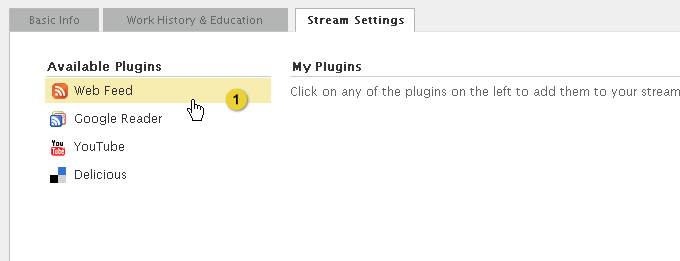
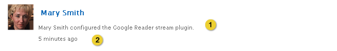

Home > Product Specification > Features > Configure a stream
Configure a stream
Manage and receive notifications
Customize the start page
Overview
Information specific to the stream can be configured as well as allowing or
restricting posting and commenting on a stream. Group coordinators can also approve/deny
membership to private groups and add/remove group coordinators. Stream plugins can also be
configured to provide the employee or group with the most up to date data from sources such
as delicious, google reader, or youtube.
Conditions of Satisfaction
Personal - Stream Details
- The knowledge worker must be able to upload and resize an image acting as an avatar for
his personal stream.
- The knowledge worker must be able to set his current title in his stream.
- The knowledge worker must be able to set a display name in place of his first name and
middle initial on his personal stream.
- The knowledge worker must be able to set a short description describing his stream.
- The knowledge worker must be able to publish his interests as keywords for his stream.
- The knowledge worker must be able to publish his email and phone number to his stream.
Personal - Stream Admin
- The knowledge worker must have the option to not allow colleagues to post to his
personal stream (posting is enabled by default).
- The knowledge worker must have the option to not allow colleagues to comment on activity
in his personal stream. (commenting is enabled by default)
Personal - Plugins
- The knowledge worker must be able to select from and configure a stream plugin to import
activity into his personal stream.
- The knowledge worker must be able to remove a stream plugin configured for his personal
stream.
- The knowledge worker must see a warning message if a stream plugin failed to import
activity.
- The knowledge worker must be able to import an ATOM or RSS feed’s entries into his
personal stream.
- The knowledge worker must be able to import a delicious user’s bookmarks into his
personal stream.
- The knowledge worker must be able to import a Google Reader user’s shared items into his
personal stream.
- The knowledge worker must be able to import a Youtube channel’s videos into his personal
stream.
Group - Stream Details
- The group coordinator must be able to upload and resize an image acting as an avatar
for a group stream he coordinates.
- The group coordinator must be able to set a short description describing the group
stream he coordinates.
- The group coordinator must be able to publish the groups interests as keywords for a
group stream he coordinates.
- The group coordinator must be able to set a URL representing the website for the group.
Group - Stream Admin
- The knowledge worker must be able to create a new group and select whether it is public
or private.
- The group coordinator must have the option to not allow colleagues to post to a group he
coordinates (posting is enabled by default).
- The group coordinator must have the option to not allow colleagues to comment on
activity in a group he coordinates (commenting is enabled by default).
- The group coordinator must be able to add and remove colleagues as coordinators for the
profile of a group he coordinates.
- The group coordinator must be able to approve or deny a membership request to a private
group he coordinates.
- The group coordinator or Eureka administrator must be able to remove a group profile for
a group he coordinates.
- The Eureka administrator must be able to remove any group profile.
Group - Plugins
- The group coordinator must be able to select from and configure a stream plugin to
import activity into a group stream he coordinates.
- The group coordinator must be able to remove a stream plugin configured for a group
stream he coordinates.
- The group coordinator must see a warning message if a stream plugin failed to import
activity.
- The group coordinator must be able to import an ATOM or RSS feed’s entries into a group
stream he coordinates.
- The group coordinator must be able to import a delicious user’s bookmarks into a group
stream he coordinates.
- The group coordinator must be able to import a Google Reader user’s shared items into a
group stream he coordinates.
- The group coordinator must be able to import a Youtube channel’s videos into a group
stream he coordinates.
User Experience
Personal - Stream details

- From the knowledge worker’s profile. Takes the knowledge worker to the Configure Stream screen.
Upload and resize the avatar

- Discards the changes made to the form and returns the knowledge worker to the profile page.
- Upload photo. Refer to the Upload Photo UX Guidelines for additional details.
Set title in personal stream

- For a personal stream this is the title field. It supports up to 50 characters. It is pre-populated with the knowledge workers title. The description reads: “
Set display name

- Display Name field supports up to 50 characters. It is pre-populated with the knowledge workers First Name and Middle Initial.
Set short description

- Text area to enter a description for the stream (reads “Job Description” for employee streams). Text area is restricted to 250 characters.
Publish interests

- Input field to enter a list of interests as keywords for the stream.
Publish email address and phone numbers

- Work Phone only shows up in employee streams: Phone field supports up to 50 characters.
- Cell only shows up in employee streams: Phone field supports up to 50 characters.
- Fax only shows up in employee streams: Phone field supports up to 50 characters.
- Email only shows up in employee streams: Email field supports up to 100 characters and needs to be properly formatted as “user@example.com”. Email is pre-populated with the knowledge workers email address.
Personal - Stream Admin
Enable/Disable posting and commenting

- Stream moderation, allows users to enable or disable posting to their stream.
- Stream moderation, allows users to enable or disable commenting on activities on their stream.
Personal - Plugins
Adding stream plugins

- Clicking the plugin name displays the plugin configuration form.
Stream plugin components

- Header- provides an overview of the plugin and instructions on how to configure it.
- Plugin form - composed of one or more form elements required to configure the plugin.
- Terms of service message - each knowledge worker is required to affirm that they understand the terms of use statement before they they can complete the configuration of the plugin.
- Clicking submit completes the configuration and takes the knowledge worker to list of configured plugins. Feedback displays at the top of the page with a close option: “Stream Plugin has been successfully added”. Refer to the Action Feedback UI design pattern for additional details.

- The knowledge worker enters a URL or username and clicks import.
- This displays a process animation while the system validates the entered information. If the information can’t be validated a warning message is displayed to the knowledge worker.
- When the entered information is successfully validated the feed name is displayed. The knowledge worker can delete their entry by clicking the Delete link which will return the input form.

- Plugins are listed in reverse chronological order
- Hovering over the plugin icon or text displays the Edit and Delete links.
- Clicking edit displays the plugin configuration form titled edit plugin.
- Clicking the delete icon displays a pop-up window asking the knowledge worker: “Are you sure you want to delete this plugin” if the knowledge worker clicks “yes” the plugin is deleted and a warning message is displayed: “Stream plugin [insert name] has been deleted”. Refer to the Action Feedback UI design pattern for additional details.
Warning message

- Error display when stream plugin failed to import activity
Import Delicious bookmarks into the stream

- Header
- Form
- Process animation
- Validated user name
Activity Generated from the Delicious Plugin

- Post indicating that a stream plugin has been configured for a personal stream. For a group profile stream plugin message, substitute employee name for group name. Only new activity from this point forward is imported from the stream plugin.
- Time since stream-plugin was configured.

- Bookmark content type
- Link opens a new window displaying the user’s shared bookmarks page.
Import Google Reader shared items into the stream

- Header
- Form
- Process animation
- Validated shared items feed
Activity Generated from the Google Reader Plugin

- Post indicating that a stream plugin has been configured for an employee profile. For a group profile stream plugin message, substitute employee name for group name. Only new activity from this point forward is imported from the stream plugin.
- Time since stream-plugin was configured.

- Bookmark content type
- Link opens a new window displaying the user’s shared items.
- Time Stamp and Source
Import a YouTube channel’s video’s into the stream

- Header
- Form
- Process animation
- Validated YouTube feed
Activity Generated from the YouTube Plugin

- Post indicating that a stream plugin has been configured for an employee profile. For a group profile stream plugin message, substitute employee name for group name. Only new activity from this point forward is imported from the stream plugin.
- Time since stream-plugin was configured.

- Video content type
- Link opens a new window displaying the profile page of the configured YouTube user.
Group - Stream details

- Takes the user back to the stream.
- Upload photo. Refer to the Upload Photo UX Guidelines for additional details.
- Text area to enter a description for the group stream. Text area is restricted to 250 characters.
- Input field to enter a list of keywords for the stream.
- Stream moderation, allows users to control access to the group stream.
- Saves the edits made to the form and keeps the group coordinator on the Basic Info tab. Feedback displays at the top of the page with a close option: “Your profile has been updated”. Refer to the Action Feedback UX Guidelines for additional details.
- Discards the changes made to the form and returns the group coordinator to the profile page.
Group - Stream admin

- Group Name field supports up to 50 characters.
- Group Web Address field supports up to 20 lower case characters.
- Text area to enter a description of the group stream. Text area is restricted to 250 characters.
- Hovering over an employee name, meta data or avatar displays a Delete link allowing the knowledge worker to remove the employee as a group coordinator.
- Add Coordinator link displays the employee lookup modal which allows the knowledge Worker to select employees that will be group coordinators. Refer to the Employee Lookup UX Guidelines for more information. The knowledge worker must be selected by default as the group coordinator. At least one employee must be selected as a coordinator.
- Public is the default option. All knowledge workers are able to view and follow a public group.
- Group is restricted to knowledge workers added by the group coordinator.
- Submits the form and returns the knowledge worker to the . The new group profile displays the following feedback at the top of the page with a close option: “Your group has been successfully created”. If the parent organization requires that new groups be approved, return the knowledge worker to the parent organization profile and display the following feedback at the top of the page with a close option: “Your group has been submitted to an organization coordinator for approval”. Refer to the Action Feedback UX Guidelines for additional details.
- Discards the changes made to the form and returns the knowledge worker to the group’s configure stream.
Test Plan
Following are the URLS for the plugins
1. https://eureka-uat.smp.isgs.lmco.com/plugins/delicious.xml
2. https://eureka-uat.smp.isgs.lmco.com/plugins/googlereader.xml
3. https://eureka-uat.smp.isgs.lmco.com/plugins/rss.xml
4. https://eureka-uat.smp.isgs.lmco.com/plugins/twitter.xml
5. https://eureka-uat.smp.isgs.lmco.com/plugins/unity.xml
6. https://eureka-uat.smp.isgs.lmco.com/plugins/youtube.xml
Personal - Stream Details
- Verify a knowledge worker can upload and resize an image acting as an avatar for stream
- Verify the ability to upload a file only of type JPG, PNG, GIF
- Verify error handling is present if the file type is not correct
- Verify the ability to upload a file that is 4MB or smaller
- Verify error handling is present if the file is larger than 4MB
- Verify the ability to crop the image
- Verify the avatar is correctly displayed in the following locations:
* Activities with no comments
Activity with a single comment that you authored
Activity where you authored only the last comment
Activity where you authored only the comments in the middle, not the first and last
Activity with comments you did not author
Comments on activities you did not author
Activity shared to your own stream
* Activity shared to a stream other than your own
- Verify a knowledge worker can publish his current title on his stream
- Verify the ability to enter a current title via the Basic Info tab of the Configure Stream page
- Verify the title appears on the profile
- Verify the title can be edited
- Verify the title is a required field
- Verify error handling occurs when the field is not populated
- Verify a knowledge worker can set a display name in place of his first name and middle initial
- Verify the display name is a required field on the Basic Info tab of the Configure Stream page
- Verify that the display name defaults to the knowledge workers first name and middle initial
- Verify the ability to edit the display name entered
- Verify that any change to the display name appears in the following locations:
* On an activity you posted with no comments
On an activity you posted with comments
On an activity with comments you did not author
On comments on activities you did not author
On activity shared to your own stream
On activity shared to a stream other than your own
On activity you share
On comments you have made
* On existing notifications
- Verify a knowledge worker can set a short description describing his stream
- Verify the short description is an optional field on the Basic Info tab of the Configure Stream page
- Verify the short description is limited to 250 characters
- Verify the short description is displayed on the profile
- Verify a knowledge worker can to publish his interests as keywords
- Verify the interests field is optional
- Verify the interests can be added, edited and deleted on the Basic Info tab of Configure Stream page
- Verify interests must be displayed on the about tab in the profile
- Verify a knowledge worker can publish his contact information
- Verify the work phone, cell phone and fax fields are optional
- Verify the email field is required
- Verify the email field is populated by default with the knowledge workers LMCO email address
- Verify contact information added or changed on the Basic Info tab of Edit profile
- Verify contact information is displayed on the about tab in the profile
Personal - Stream Admin
- Verify the knowledge worker has the option to not allow colleagues to post to his personal stream
- Verify the option to allow others to post to your personal stream is enabled by default
- Verify that when enabled, other knowledge workers are able to post activity to your personal stream
- Verify that when disabled, other knowledge workers are not able to post activity to your personal stream
- Verify the knowledge worker has the option to not allow colleagues to comment on activity in his personal stream
- Verify the option to allow others to comment on activity within your personal stream is enabled by default
- Verify that when enabled, other knowledge workers are able to comment on activity within your personal stream
- Verify that when disabled, other knowledge workers are not able to comment on activity within your personal stream
Personal - Plugins
- Verify a knowledge worker can select from and configure a stream plugin to import activity into his personal stream
- Fullfilled by executing Steps 5-8
- Verify a knowledge worker can remove a stream plugin configured into his personal stream
- Fullfilled by executing Steps5-8
- Verify a knowledge worker can create a failure scenario for a stream plugin into his personal stream
- Fullfilled by executing Steps 5-8
- Verify a knowledge worker can import an atom or rss feed’s entries into his personal stream
- Verify a rss feed can be imported for a personal stream
- Verify a atom feed can be imported for a personal stream
- Verify a valid Public RSS / Atom URL is required
- Verify a message is displayed if there is an error importing the feed
- Verify the Terms of Use is required
- Verify the feed is displayed when clicking on the source link
- Verify the feed plugin can be edited
- Verify the feed plugin can be deleted
- Verify the feed is displayed in his personal stream
- Verify a knowledge worker can import a delicious user’s bookmarks into his personal stream
- Verify the delicious plugin can be imported for an employee
- Verify a valid user name is required
- Verify a message is displayed if there is an error importing the feed
- Verify the Terms of Use is required
- Verify that a delicious plugin avatar, user name, and source of the feed are displayed in the My Plugins
- Verify the delicious feed is displayed when clicking on the source link
- Verify the delicious plugin can be edited
- Verify the delicious plugin can be deleted
- Verify the delicious feed is displayed in his personal stream
- Verify a knowledge worker can import a Google reader user’s shared items into his personal streamm
- Verify the google reader plugin can be imported for a personal stream
- Verify a Shared Items URL is required
- Verify a message is displayed if there is an error importing the feed
- Verify the Terms of Use is required
- Verify that a Google Reader plugin avatar, user name, and source of the feed are displayed in the My Plugins
- Verify the google reader feed is displayed when clicking on the source link
- Verify the google reader plugin can be edited
- Verify the google reader plugin can be deleted
- Verify the google reader feed is displayed in his personal stream
- Verify a knowledge worker can import a Youtube channel’s videos into his personal stream
- Verify the youtube plugin can be imported for a personal stream
- Verify a valid user name is required
- Verify a message is displayed if there is an error importing the feed
- Verify the Terms of Use is required
- Verify that a youtube plugin avatar, user name, and source of the feed are displayed in the My Plugins
- Verify the youtube feed is displayed when clicking on the source link
- Verify the youtube plugin can be edited
- Verify the youtube plugin can be deleted
- Verify the youtube feed is displayed in his personal stream
Group - Stream Details
- Verify a Group Coordinator can upload and resize an image acting as an avatar for a stream he coordinates
- Verify the ability to upload a file only of type JPG, PNG, GIF
- Verify error handling is present if the file type is not correct
- Verify the ability to upload a file that is 4MB or smaller
- Verify error handling is present if the file is larger than 4MB
- Verify the ability to crop the image
- Verify the avatar is correctly displayed
- Verify a Group Coordinator can set a short description describing the stream he coordinates
- Verify the short description is an optional field on the Basic Info tab of Configure Stream
- Verify the short description is limited to 250 characters
- Verify the short description is displayed on the profile
- Verify a Group Coordinator can to publish the groups interests as keywords
- Verify the interests field is optional
- Verify the interests can be added, edited and deleted on the Basic Info tab of Configure Stream
- Verify interests must be displayed on the about tab in the profile
- Verify a Group Coordinator can set a URL representing a website for the group he coordinates
- Verify field is optional
- Verify when a URL is saved; there is a link available on the stream to access the URL
- Verify when a URL is not present; there is not a link present on the stream
- Verify error handling when an invalid URL is entered
Group - Stream Admin
- Verify a knowledge worker can create a new group and select whether it is public or private
Verify a group name can be set
- Verify a group web address can be set
- Verify a new public group can be created
- Verify the receipt of an automated email with general directions for the next steps for group coordinators upon approval of the creation of the group
- Verify the public group appears in the directory
- Verify a new private group can be created
- Verify it appears in the directory
- Verify the knowledge worker is not able to access the group
- Verify the group coordinator(s) are able to access the private group
- Verify a knowledge worker can request access to a private group that his is not a member of and verify access once approved or denied
- Verify knowledge worker has access to the private group after access has been granted
- Verify knowledge worker does not have access to the private group if access has not been granted
- Verify a group coordinator can approve or deny a membership request to a private group
- Verify group coordinators can approve or deny membership to a private group
- Verify a group coordinator can create a new group while group moderation enabled
- Verify a message is received when the group is created indicating that the group is pending approval by Eureka Administrators (refer to UX designs for exact message).
- Verify a message displays in the group profile indicating the group is pending approval when it is accessed by a knowledge worker (refer to UX designs for exact message).
- Verify a group coodinator can enable notification settings
- Verify that group members receive emails and in app notifications when the option is enabled in the group configure page and individual user settings notification tab.
- Verify that group members do not receive emails and in app notifications if the option is disabled in the group configure page and/or individual user settings notification tab.
- Verify that group coordinators receive emails and in app notifications when the option is enabled in the group configure page and individual user settings notification tab.
- Verify that group coordinators do not receive emails and in app notifications if the option is disabled in the group configure page and/or individual user settings notification tab.
Group - Plugins
- Verify a Group Coordinator can select from and configure a stream plugin to import activity into a group stream he coordinates
- Fulfilled by executing Steps 5-8
- Verify a Group Coordinator can remove a stream plugin configured in a group stream he coordinates
- Fulfilled by executing Steps 5-8
- Verify a Group Coordinator can create a failure scenario for a stream plugin in a group stream he coordinates
- Fulfilled by executing Steps 5-8
- Verify a Group Coordinator can import an atom or rss feed’s entries into a group stream he coordinates
- Verify a rss feed can be imported for a group stream he coordinates
- Verify a atom feed can be imported for a group stream he coordinates
- Verify a valid Public RSS / Atom URL is required
- Verify a message is displayed if there is an error importing the feed
- Verify the Terms of Use is required
- Verify the feed is displayed when clicking on the source link
- Verify the feed plugin can be edited
- Verify the feed plugin can be deleted
- Verify the feed is displayed in the group’s stream
- Verify a Group Coordinator can import a delicious user’s bookmarks into a group stream he coordinates
- Verify the delicious plugin can be imported for a group stream he coordinates
- Verify a valid user name is required
- Verify a message is displayed if there is an error importing the feed
- Verify the Terms of Use is required
- Verify that a Delicious plugin avatar, user name, and source of the feed are displayed in the My Plugins
- Verify the Delicious feed is displayed when clicking on the source link
- Verify the Delicious plugin can be edited
- Verify the Delicious plugin can be deleted
- Verify the Delicious feed is displayed in the group activity stream
- Verify a Group Coordinator can import a google reader user’s shared items into a group stream
- Verify the Google Reader plugin can be imported for a group stream he coordinates
- Verify a Shared Items URL is required
- Verify a message is displayed if there is an error importing the feed
- Verify the Terms of Use is required
- Verify that a Google Reader plugin avatar, user name, and source of the feed are displayed in the My Plugins
- Verify the Google Reader feed is displayed when clicking on the source link
- Verify the Google Reader plugin can be edited
- Verify the Google Reader plugin can be deleted
- Verify the Google Reader feed is displayed in the group’s stream
- Verify a Group Coordinator can import a Youtube channel’s videos into group stream he coordinates
- Verify the youtube plugin can be imported for a group stream
- Verify a valid user name is required
- Verify a message is displayed if there is an error importing the feed
- Verify the Terms of Use is required
- Verify that a youtube plugin avatar, user name, and source of the feed are displayed in the My Plugins
- Verify the Youtube feed is displayed when clicking on the source link
- Verify the Youtube plugin can be edited
- Verify the Youtube plugin can be deleted
- Verify the Youtube feed is displayed in the group’s stream
| PAGE CONTENTS
Version 1.5
Documentation is also available for all of the following versions:
0.9 | 1.0 | 1.1 | 2.0
|